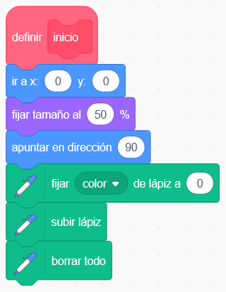
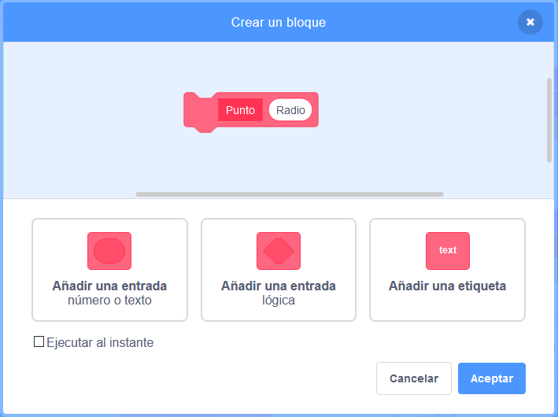
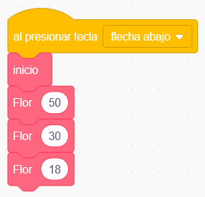
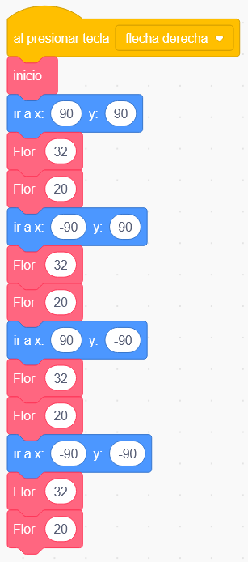

12. Drawing flowers¶
En esta práctica vamos a programar varios bloques de usuario para que dibujen flores en la pantalla al presionar las teclas de dirección.

We start the Scratch editor.
Click language button
 upper menu bar and select English.
upper menu bar and select English.Añadimos una nueva extensión con el botón añadir extensión
 abajo a la izquierda.
abajo a la izquierda.Seleccionamos la extensión Lápiz para poder dibujar.

En la barra de código aparecerá un nuevo icono, el Lápiz
 , con instrucciones de color verde oscuro.
, con instrucciones de color verde oscuro.Creamos un nuevo bloque llamado inicio.
First we click on the button my blocks

Then click on create a block

Then we change the name of the new block to inicio
El bloque inicio servirá para iniciar el programa. Borrará la pantalla, subirá el lápiz con color cero, y colocará al gato en el centro con tamaño pequeño.
Creamos un nuevo bloque llamado Punto.
First we click on the button my blocks
Then click on Make a block
Then we change the name of the new block to Punto
Click on Add an input number or text and give it name Radio
Finally press the button Ok
El bloque Punto servirá para dibujar un punto en la pantalla con un tamaño que depende del parámetro Radio.

Creamos un nuevo bloque llamado Flor.
First we click on the button my blocks
Then click on Make a block
Then we change the name of the new block to Flor
Click on Add an input number or text and give it name Radio
El bloque Flor servirá para dibujar 12 puntos en círculo, alrededor del gato, con un tamaño que depende del parámetro Radio.

Ahora programamos un pequeño código para probar el bloque flor.

Press the green flag
 to test the operation of the program.
to test the operation of the program.Al pulsar la tecla de Flecha arriba en el teclado, el gato dibujará una flor de círculos de colores en la pantalla.
A continuación realizamos un programa para dibujar una flor compuesta de varios círculos de puntos.
Press the green flag
to test the operation of the program.Al pulsar la tecla de Flecha abajo en el teclado, el gato dibujará una flor de varios círculos de colores en la pantalla.
Para terminar realizamos un programa para dibujar flores en varios lugares de la pantalla.
Para definir los números de la instrucción ir a x y podemos mover al gato allí donde queremos que aparezca la flor.
Press the green flag
to test the operation of the program.Al pulsar la tecla de Flecha derecha en el teclado, el gato dibujará cuatro flores en cuatro posiciones distintas de la pantalla.
{kind=link}
{kind=link}
{kind=link}
Ejercicios¶
Modifica el programa para que la función flor no cambie el color de los puntos y todos tengan el mismo color. Dibuja una flor compuesta por un anillo de puntos grandes rojos en la parte exterior y un anillo pequeño de puntos verdes en la parte interior.
Realiza un programa que dibuje cinco flores situadas como en el logotipo de los juegos olímpicos.